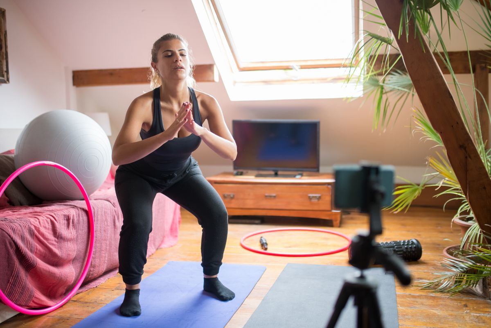
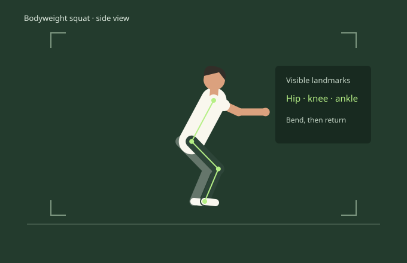
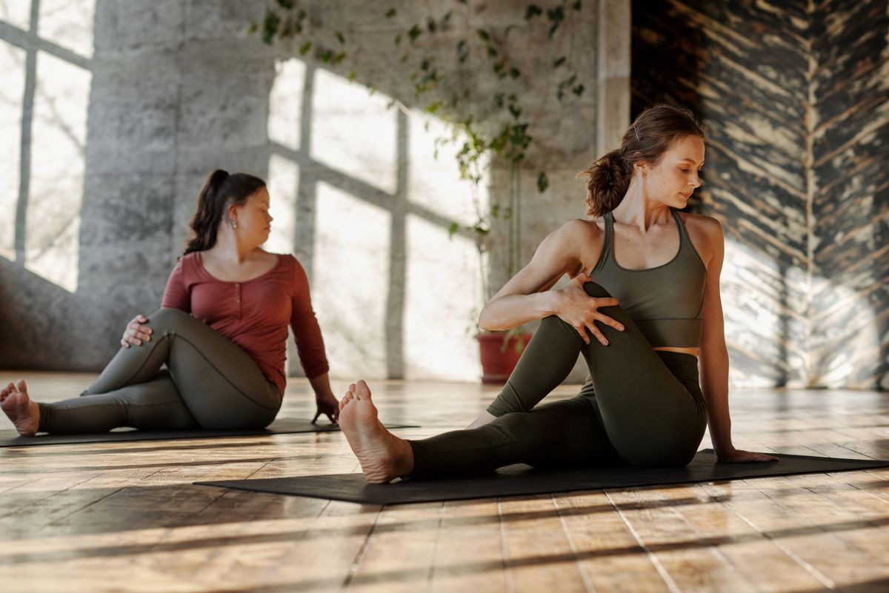

Coaching, on your terms
Built-in device voice gives supported movement cues. Optional generative coaching runs with the local Mac backend; it is not available on static hosting alone.
Open the coachLoading your saved preferences…
Movement. With a little more guidance.
Choose an exercise. Follow the movement. Let your camera help you count reps and stay on track.
No wearable needed. Start as a guest.

Simple to start
No complicated setup. Preview the movement before turning on your camera.
Try a guided workoutStart with a seated movement, arm exercise or standing practice.
Use the view shown in the guide. Keep the required joints in frame.
Follow the demonstration, complete each rep and hear supported movement cues.
Save your reps, session time and observed angles to your own history.
The exercise collection

Illustrated tracking example · not a recorded sessionYour camera is the starting point
KinArc estimates joint angles from visible body landmarks. Complete a bend and return to count a repetition. Spoken cues help with supported issues, such as moving your upper arm during a curl.
Camera position affects measurements. KinArc is not a medical assessment and cannot verify every aspect of form.
Set up a workoutA record you can return to
Review daily, weekly and monthly activity. Keep notes, compare the same exercise and export your records when you need them.
View progress toolsBuilt-in device voice gives supported movement cues. Optional generative coaching runs with the local Mac backend; it is not available on static hosting alone.
Open the coachCamera frames and videos are processed on your device. Guest profiles work without an account. Cloud synchronization is optional and requires setup.
Read about privacyAbout KinArc
KinArc combines exercise demonstrations, camera-assisted rep counting and personal workout records in one web application.

Choose from ten supported exercises, watch the demonstration, configure your targets and start a camera or video session. Your saved activity belongs to the active profile.
Pose estimation measures projected joint angles and selected movement cues. It does not diagnose injury, prescribe rehabilitation, measure pain or certify safe form. Use exercises and ranges appropriate for you.
The application works in a supported browser and can be installed as a PWA. Download exercise files in Settings for offline use. Google sign-in is optional; generative coaching requires the local backend.
Open the appData & privacy
A plain-language overview of how this application handles data.
Frames are processed on your device. The app does not upload or retain camera footage. Saved sessions contain exercise, date, repetitions, duration, estimated angles and any notes you add.
Guest data stays in this browser. Google sign-in uses Firebase authentication. Local records are separated by account, but are not encrypted; people with access to the same browser and device may access local data.
Cloud synchronization is off until enabled and configured. When enabled, profiles, routines and session records are sent to Firebase. Local generative coaching sends text and selected movement measurements to the server on your Mac. Device speech and optional speech recognition depend on your browser and operating system provider.
Use Account & profiles to export a backup, remove profiles or erase this local workspace. Removing local data does not automatically erase cloud records; use the separate cloud controls when configured.
Open data controlsUse of KinArc
KinArc is an educational exercise application, not a medical device or treatment service. Movement measurements and coaching can be incomplete or inaccurate. Only use exercises and ranges appropriate for you, and stop if a movement causes pain.
Keep backups of records you want to retain. Browser storage can be cleared or unavailable. Optional third-party services, speech voices and offline capabilities depend on device support and service configuration.
This is a project use notice, not a customized commercial legal agreement. A public operator should provide their own identity, support contact and reviewed terms before a commercial release.
Help & limitationsChoose an exercise and watch its narrated demonstration. Position your camera in the view named in the guide. Complete the movement and return, then save your session.
No exercises match. Try another name or focus area.
Choose a source to begin.
Build a repeatable routine. Start a movement from this list and save a camera or video session at its target to check it off for today.
Guest workspace · saved on this device
Checking account setup…
Guest data stays separate. To move it to an account, export a guest backup, sign in, then restore that file.
Each person has their own journal and streak on this browser.
Profiles, routines and journals stay in this browser. Export a backup before changing devices or clearing browser data.
Preferences stay with this workspace.
Checking downloaded files…
General exercise and app guidance. No diagnosis or prescribed treatment.
Checking local coach…
Activity and observed movement measurements, not clinical recovery scores.
Last 12 weeks. Tracked sessions only; rehearsals stay separate.
Recorded minimum and maximum angles depend on camera placement and your chosen range. Higher values do not necessarily mean improvement.
Choose your profile, pick an exercise from the library and watch “Show me one rep”. Set a target, then start the camera or open a video.
Begin in the starting position, reach the movement shown in the trial, then return. Pause briefly at each end. The tracker resets an unfinished rep when a joint leaves the frame. Squats and hip hinges also check the angle of the second joint.
Finish & save adds an entry to the active profile on this browser. Camera and video sessions with at least one rep count toward the streak. Rehearsals are marked separately. Profiles are local organizers within the selected guest or account workspace. Anyone using this browser can access locally stored data; it is not encrypted or locked by Google sign-in.
Allow camera access in the browser and position it as shown in the exercise guide. If the camera is busy, close the other app using it. Video is processed on your device. Discard or finish the session to release the camera.
Open the deployed HTTPS address in Chrome. Use Install app when offered, or Chrome’s menu → Add to Home screen. Keep the first visit online until the app files finish downloading. Saved journals and downloaded demonstrations then work offline. Camera access requires permission and HTTPS. Voice quality and offline speech availability depend on the voices installed on your phone.
Camera frames and uploaded exercise videos are processed on your device; they are not saved in the journal. The journal stores exercise names, dates, rep counts, estimated angles, duration and your notes in this browser. Google sign-in and optional record-level cloud synchronization are available when configured. Sync is off until you explicitly enable it. It stores this account’s profiles, routines, exercise records and notes in Firebase. Signing in alone does not upload camera footage or history. Use Profiles to export your data. Device voice uses your browser’s speech service and is not generative AI; the browser or operating system determines whether a voice runs locally. Optional local AI mode sends movement measurements and recent coaching messages to the same-origin server running on your Mac. Use a trusted deployment, and export a backup before clearing site data.
KinArc is an educational movement application that pairs clay demonstrations with camera-based pose tracking. Its measurements are estimates. Use the movement limits set by your clinician.